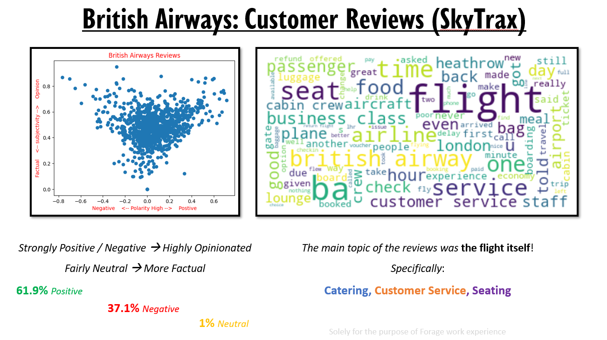

This project was completed as part of the British Airways: Data Science job simulator provided by Forage. The job simulator is designed to give the participants tasks that simulate the work of a data scientist at British Airways. The simulator gave me valuable experience to transfer into my career and allowed me to demonstrate my skills and knowledge within data science.
The first task involved webscraping a website called SkyTrax to find customer reviews about British Airways. This data then had to be cleaned and used for data analysis.
For my firt stage of analysis, I used the keywords found in the reviews to produce a wordcloud. This will allow senior members of staff to easilt identify what topics are of the most importnace to their customers.
My second stage of analysis was to perform a sentiment analysis of each review. From this I plotted the Subjectivity (Fact/Opinion) agaisnt the Polarity (Postive/Neutral/Negative) of the reviews.
Using this data, I was asked by a member of management to produce a one slide presentation that they could use in a meeting with senior members of staff.
The slide I produced can be seen below:

The second task invloved predicting customer buying behaviour. I was provided with a dataset from the British Airways booking system. I was asked to use this data in order to predict wether or not a cusomer would complete a booking. I was also asked to find out what factors are most significant for predicting wether or not a customer completes a booking.
My first task was to clean the data in preparation of training a predictive model. I started by performing one-hot encoding on all of the catergorial data. I also checked the summary statistics of the data to ensure that the data didnt contain any nonsensical entries as well as checking for any null entries.
Once the data was cleaned, I fitted a random forest model to the data. The reason I chose a random forest model is due to its ability to make accurate predictions whilst also allowing me to view the significant categories that influence the prediction. This would allow me to provide the senior management with the answers thet were looking for. Upon fitting the model, I achieved an average accuracy of 85% when tested using 10-Fold Cross Validation.
Just like the previous task, I was asked to produce a one slide presentation to present my findings to senior management.
My presentation can be seen below:
In conclusion, the British Airways: Data Science job simulator provided by Forage was an extremely interesting and valuable experience. It taught me a lot about the work of a data scientist within a professional environment and allowed me to demonstrate my skills through practical, real-world experiences.
To view the code that I wrote in order to produce my results please use the links below.